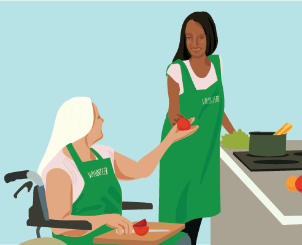

Engaging in meaningful activities is essential for our emotional and mental well-being. When people are engaged, they are participating in the community, interacting with others and making a positive contribution. This has many benefits for a person with disability by helping them to develop their identity, skills, relationships and autonomy. This builds a person’s sense of worth and value in society. Meaningful activities can range from helping a family member tend a garden, to volunteering to prepare food at a soup kitchen.
People with disabilities may need additional support to be engaged. This begins with a conversation about their interests. The purpose is to find activities they may not have thought of that they’d enjoy and would be willing to explore. This is to expand their knowledge, networks and skills. The other type of support they might need is overcoming attitudinal barriers. This is when people falsely assume that a person with disability is not as capable as others—leading to their exclusion. When this occurs, have a discussion with the people involved, including the service user and their family.
Consider the following questions:
- Why is the activity considered too difficult for the service user? Is it possible to break it down into smaller, more manageable steps?
- Would additional support be useful? Could we use aid equipment, make simple modifications to the environment, or have support staff (e.g. translator) present?
- If the service user exhibits challenging behaviour, is there a behavioural support plan for people to refer to?
- Is communication clear between parties? Is everyone taking the time and explaining things in different ways to ensure there is mutual understanding?